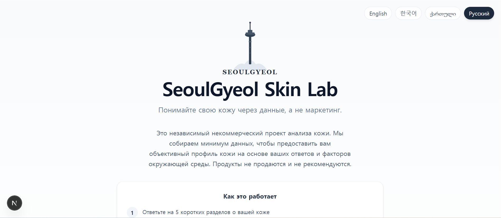

대표 사례
수작업 상품 조사를 운영 파이프라인으로
국가 간 상품 기회 분석은 보통 스프레드시트와 수작업 조사에 머뭅니다. 기준이 달라지면 처음부터 다시 해야 합니다.
가격 수집 · 매칭 · 마진 계산 · 리포트 출력을 반복 가능한 파이프라인으로 구조화했습니다. 설정을 바꾸면 언제든 같은 흐름으로 재실행됩니다.

Market Overview — 스캔 결과와 시장 비교 데이터

Product Opportunities — 마진 기준 상품 기회 리스트

Market Intelligence — 시장 분석 인사이트
이 사례가 증명하는 역량
수작업 프로세스 → 반복 실행 가능한 구조화된 워크플로우
데이터 수집 · 처리 · 검토 · 리포트 파이프라인 설계
어드민 대시보드 · 백오피스 인터페이스 구현
명확한 범위와 운영 로직을 갖춘 백엔드 MVP
추가 사례

SeoulGyeol Skin Lab
동의 기반 설문 → 점수 산출 → 리포트 생성 → 이메일 전달 파이프라인. 다국어 피부 분석 MVP.
전체 흐름 구현 · 동의 기반 데이터 처리 · 다국어 이메일 전송 확인

Restricted Ops Intake MVP
승인된 Slack 요청 → 구조화된 운영 객체. 서명 검증 · 중복 방지 · 감사 로그 포함.
웹훅 서명 검증 · 채널 허용목록 · 감사 로그 · 통합 테스트 확인

Papyr.us
실시간 공동 편집 + AI 워크플로우 통합 팀 위키. CRDT 기반 동시 편집, RBAC 구조.
Yjs + Socket.IO · Drizzle 스키마 · Vitest + Playwright 테스트 확인